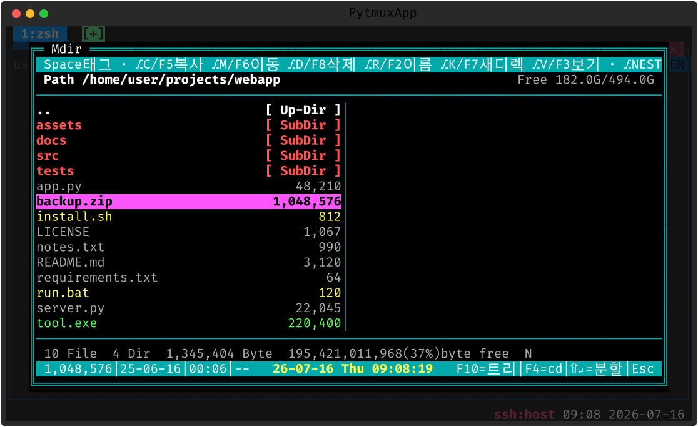
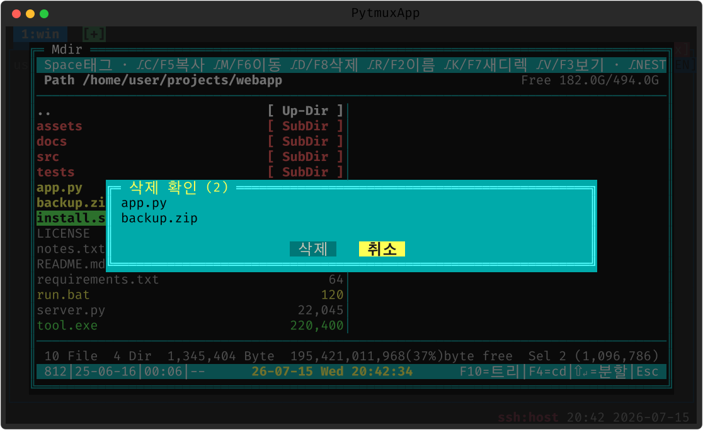
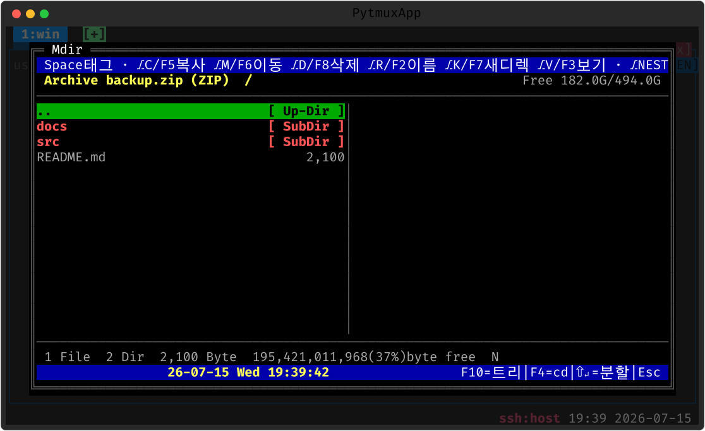
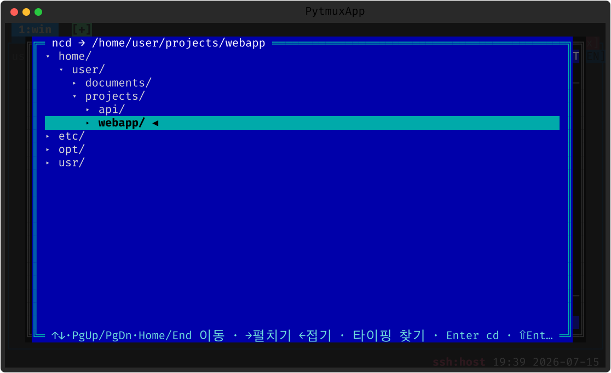

mdir
1990년대 한국에서 NCD 보다 널리 쓰인 도스 파일 관리자 Mdir III(1998) 를 재현했습니다. 검정 바탕 1-패널 다열 리스트, 확장자별 색, 하단 집계/정보줄까지 — 원본 배포판 스크린샷의 픽셀을 직접 추출해 시안 크롬까지 색을 그대로 맞췄고 — 선택막대는 커서가 놓인 항목 본래 색의 반전이라 디렉토리 위에선 붉은 막대, 압축 위에선 자홍 막대가 됩니다 — 파일 조작은 pytmux 서버가 직접 수행해 원격 패널이면 원격 파일시스템에 적용됩니다.
여는 법
| 명령 | 설명 |
|---|---|
mdir | Mdir III 풍 파일 관리자 팝업 (별칭 m) |

탐색 · 빨리찾기
| 키 | 동작 |
|---|---|
| ↑↓←→ · PgUp/PgDn · Home/End | 선택막대 이동(페이지 단위 다열 격자) |
| Enter | 디렉토리 진입 · 드라이브 전환 · 압축파일 내부 보기 · 파일은 뷰어 |
| . / Backspace | 상위 디렉토리(커서는 방금 나온 디렉토리 위에) |
| \ | 루트로 |
| 아무 글자 | 빨리찾기 — 이름 접두→부분 일치 점프 (Esc 1회=해제) |
| F4 | 현재 탐색 디렉토리로 패널 cd 후 닫기(원조의 '종료 시 잔류') |
| ⇧Enter / ^O | 커서 디렉토리를 연 새 패널 분할 |
| F10 | ncd 디렉토리 트리 — 트리에서 고른 곳으로 mdir 이동 |
태그와 파일 조작
Space 로 태그(선택)하고 — 원조처럼 커서가 한 칸 내려갑니다 — ⎇U 전체, +/- 와일드카드 마스크, * 반전. 태그가 있으면 태그 전체, 없으면 커서 항목이 조작 대상입니다.
| 키 | 동작 |
|---|---|
| ⎇C / F5 / Ins | 복사 — 대상 디렉토리 입력 |
| ⎇M / F6 | 이동 |
| ⎇D / Del / F8 | 삭제 — 확인 팝업 필수, 기본 선택은 '취소' |
| ⎇R / F2 | 이름변경(현재 이름 프리필) |
| ⎇K / F7 | 새 디렉토리 |
덮어쓰기는 2단계입니다: 충돌이 있으면 아무것도 수행하지 않고 [모두 덮어쓰기/건너뛰기/취소]를 먼저 묻습니다. 루트 삭제·디렉토리를 자기 하위로 복사 같은 위험 요청은 서버가 거부합니다.

정렬 · 필터 · 뷰어 · 압축
| 키 | 동작 |
|---|---|
| ⎇N/⎇E/⎇S/⎇T | 이름/확장자/크기/시간 정렬 — 같은 키 재입력=내림차순, ⎇O 무정렬 |
| ⎇Z / ⎇F | 숨김 파일 토글 / 파일 마스크 필터(*.py;*.md) |
| ⎇1~⎇6 / ⎇0 | 열수 강제 / 자동 |
| ⎇V / F3 | 내장 텍스트 뷰어(앞 256KB, 이진 파일 감지) — 원조 '보라(VV)' 대응 |
zip/jar/tar(.gz·.bz2·.xz) 는 Enter 로 내부를 가상 디렉토리처럼 계층 탐색합니다(읽기전용 — 원조의 '디렉토리 재현').


메모
원조 기능 중 실행(Enter)은 멀티플렉서 안에서 위험해 뷰어/압축 보기로 대응했고, 디스크 포맷·화면보호기류는 제외했습니다. 맥 터미널은 ⌥ 이 메타가 아닐 수 있어 모든 조작에 F키 별칭을 두었습니다. 원격 패널에서 열면 원격 머신의 파일시스템을 보고 조작합니다.
끄기 · 제거
:plugins 관리 팝업에서 끄거나(가역), pytmuxlib/plugins/mdir/
디렉토리를 지우면(delete-to-disable) 명령·자동완성·메뉴 어디에도 나타나지 않고 조용히
사라집니다. 코어는 영향받지 않습니다. ← 플러그인 개요